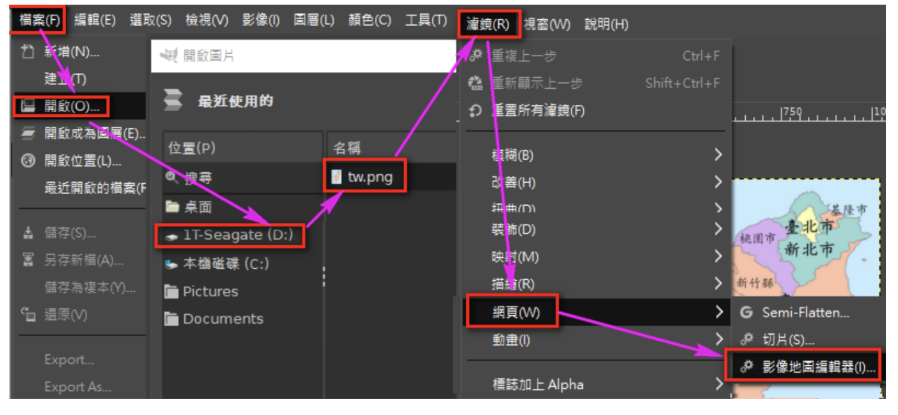
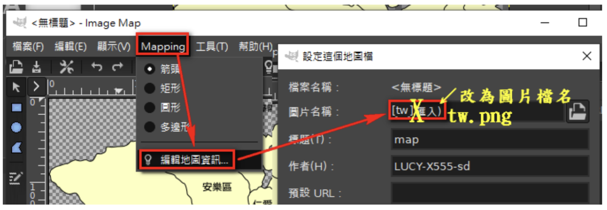
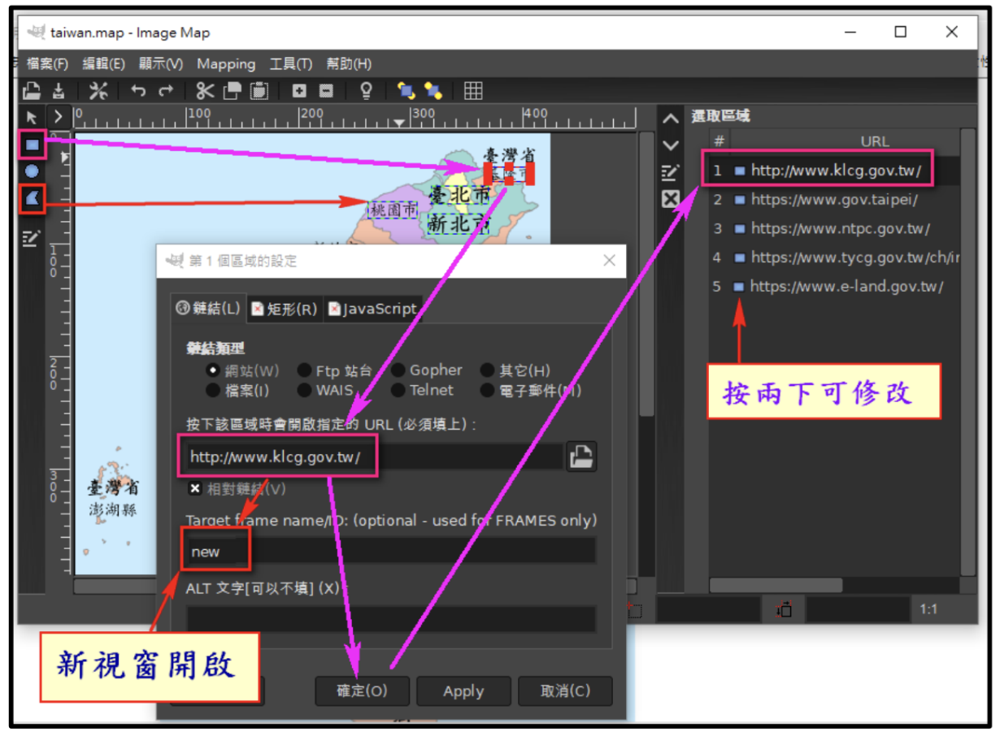
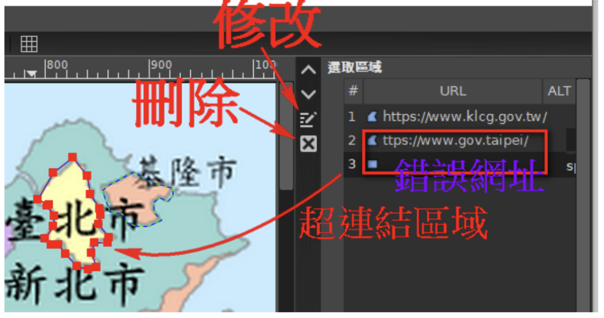
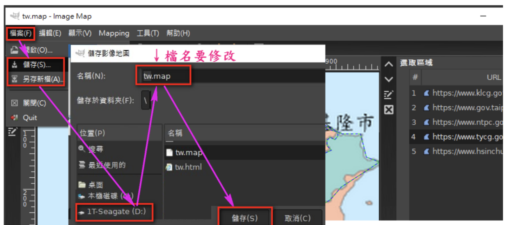

使用 Nvu 與 GIMP 製作互動式影像地圖
drv.tw 網站並按 Ctrl + F5 更新網頁顯示。
以下是一個簡單的影像地圖網頁範例，您可以參考此結構：
<!DOCTYPE html>
<html>
<head>
<meta charset="UTF-8">
<title>8XXXX 影像地圖網頁</title>
<style>
body {
text-align: center;
margin: 0;
padding: 20px;
}
img {
max-width: 80%;
height: auto;
display: block;
margin: 0 auto;
}
h1 {
text-align: center;
font-size: 2.5em;
color: #0d9488;
margin: 20px 0;
font-weight: bold;
text-shadow: 2px 2px 4px rgba(0,0,0,0.1);
}
</style>
</head>
<body>
<h1>8XXXX 台灣行政地圖</h1>
</body>
</html>

https://...若有錯誤，再貼一次即可new，讓超鏈結彈出新視窗。

此檔案日後僅能用 GIMP 修改，用 Nvu 打開會損壞。

<map> 相關原始碼。
</body> 標籤的前一行。
drv.tw 的 tw.html 網頁，按 Ctrl + F5 確認影像地圖功能正常。
我可以協助您針對 GIMP 的多邊形選取工具進行更具體的步驟示範，或者幫您測試網頁連結的正確性。